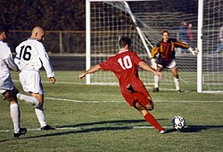

ფეხბურთი გუნდური სპორტი, რომელშიც თერთმეტი წევრისგან შემდგარი ორი გუნდი ეთამაშება ერთმანეთს.
თამაშის მიზანი გუნდის წევრებს შორის ბურთით მანევრირებაა მოწინააღმდეგე გუნდის კარში გოლის გასატანად თამაში მიმდინარეობს მართკუთხა მინდორზე საგოლე კარით ორივე ბოლოში. ამ სპორტის მთავარი დამახასიათებელი წესის მიხედვით, მოთამაშეებს, მეკარის გარდა, ბურთზე ხელის ან მკლავის გამოყენების უფლება არ აქვთ თამაშის პერიოდში. 